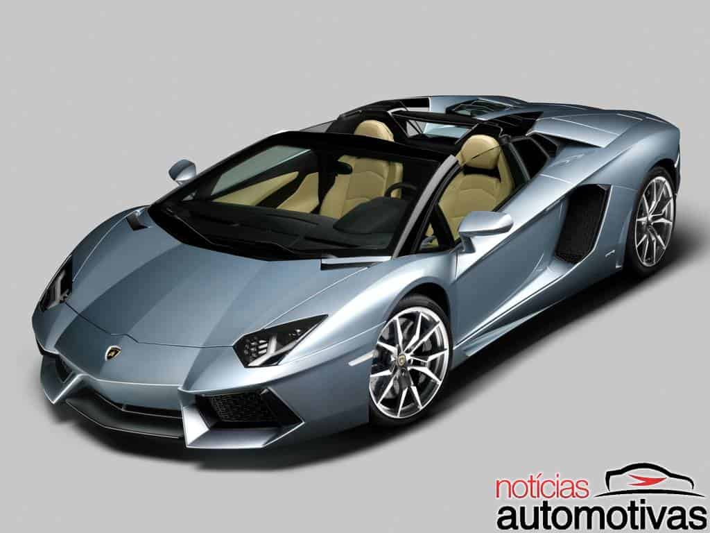
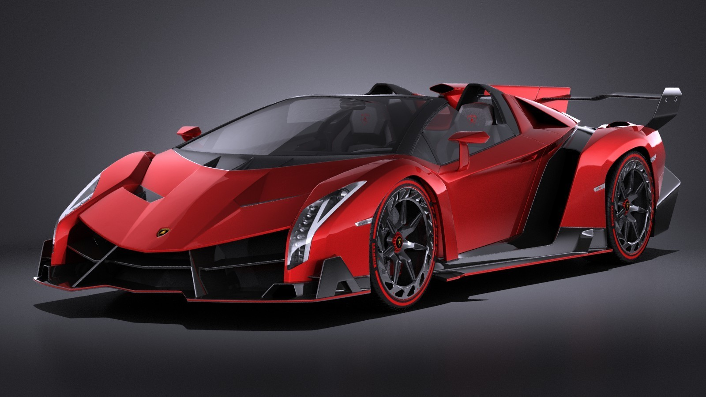
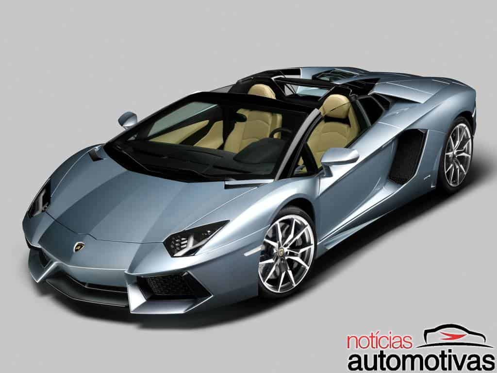
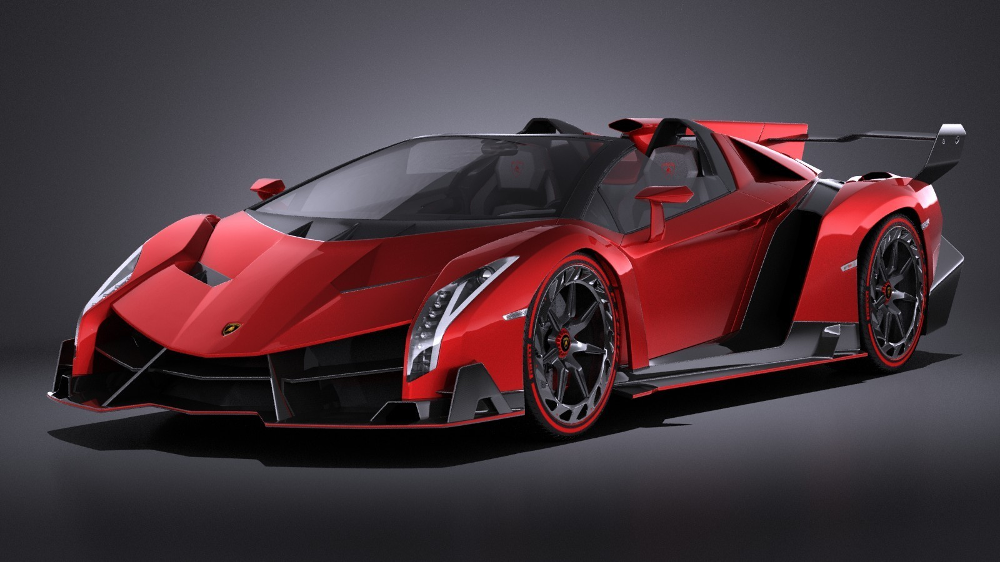

Flex Direction
Podemos utilizar para criar uma barra de menu.
Flex wrap
Podemos utilizar para criação de sites responsivos.Pois quando um dos flex itens atinge o limite do conteúdo, o último item passa para a coluna debaixo e assim por diante.
 



Flex flow
O flex-flow é um atalho para as propriedades flex-direction e flex-wrap. Neste exemplo , por menor que seja o dispositivo os flex-item não passarão para a linha debaixo
TESTE DO FLEX FLOW 1
TESTE DO FLEX FLOW 2
TESTE DO FLEX FLOW 3
justify-content
Alinha os itens flex no container de acordo com a direção
align itens
O align-items alinha os flex itens de acordo com o eixo do container.Imagem exatamente no centro.